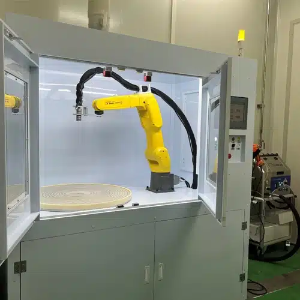

01
CVD REACTOR DECONTAMINATION
폴리실리콘 CVD 반응기 세척

반응기 내부의 실리콘 축적물을
화학약품 없이, 표면 손상 없이 제거합니다.
폴리실리콘 제조에서는 CVD 반응기 내부에 실리콘 축적물과 분진이 쌓이는 것을 관리해야 합니다. 기존의 고압수 세척과 화학 스크러빙은 시간이 오래 걸리고 작업자가 유해 화학물질에 노출되며, 처리 비용이 드는 2차 폐기물을 만듭니다.
드라이아이스 세척은 반응기 내부 표면을 손상시키지 않으면서 축적물을 제거하는 방식으로 활용됩니다. 화학 용제가 필요 없어 작업 안전이 개선되고, 세정 매체가 승화하므로 2차 폐기물이 발생하지 않습니다. Cold Jet은 이 방식이 후속 공정 오염을 막고 불순물과 폐기율을 줄이는 데 기여한다고 설명합니다.
대표 대상
- CVD 반응기 내부
- 반응기 부품 · 전극 주변
- 원료 생산 설비